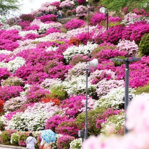

Ressa Walk
西山公園
読込中…
今日も西山へ？
晴れ 24℃ ／ 絶好のおでかけ日和です
今日の混みぐあい（実データ・曜日平均）
—
読み込み中…
曜日別の来園者数（人流データ）から予測します
✨ 西山公園の見どころ
レッサーパンダ

ツツジ
🖋 西山川柳
西山公園・レッサーパンダ・ツツジや紅葉をお題に、五・七・五で一句どうぞ🖋 毎月いちばん「いいね」を集めた7句が、その月の 川柳七福神 です。目指せ七福神入り！
🏆 今月の西山川柳ランキング
（川柳七福神）
（川柳七福神）
※これは仮の機能です。投稿内容といいねはこの端末内に保存され、実際には送信されません。本番では鯖江市のサーバーで共有する仕組みを想定しています。
📮 西山公園 意見箱
西山公園をもっと楽しく・便利にするために、みなさんの声を集めています。「こんな施設がほしい」「ここが不便」「こんなイベントがあったら」など、気づいたことを気軽にお寄せください。いただいた意見は、公園やこのアプリの改善の参考にします。
※これは仮の機能です。送信内容はこの端末内に保存され、実際には送信されません。本番では鯖江市へ届く仕組みを想定しています。
🌸 花ごよみ
📊 混雑&アクセス
西山公園へのアクセス
電車
福井鉄道 西山公園駅 下車すぐ（駅が公園の正面）／ JR鯖江駅からは つつじバス・徒歩約20分
車
北陸自動車道 鯖江IC から約5分 ／ 駐車場あり（道の駅西山公園 ほか）
バス
鯖江市コミュニティバス つつじバス（停留所は鯖江市オープンデータ）
所在地
福井県鯖江市桜町3丁目7-20 ／ 鯖江市公園管理事務所 TEL 0778-51-1001
🐾 推しレッサー
きょうの推しレッサー
出典：個体名・生年月日・性別・プロフィールは鯖江市オープンデータ「西山動物園のレッサーパンダ一覧」、写真は鯖江市オープンデータ「レッサーパンダ画像」より（CC BY）。
📸 みんなのレッサー写真
みんなが撮った西山公園のレッサーパンダ写真を「いいね」で応援📸 毎月いちばん人気の7枚が、その月の レッサー七福神 です。目指せ七福神入り！
🏆 今月のレッサー写真ランキング
（レッサー七福神）
（レッサー七福神）
📷 写真を投稿
※これは仮の投稿機能です。表示中の写真は動作確認用のサンプルで、実際の投稿ではありません。いいね数も仮の表示（この端末内に保存）です。本番では投稿写真・いいねを別サーバーに保存する想定です。
🗺 おでかけガイド
基本情報
料金
西山動物園は入園無料
時間
西山動物園 9:00〜16:30（公園は常時開放）
休み
西山動物園 毎週月曜（祝日の場合は翌日）
所在地
福井県鯖江市桜町3丁目7-20 ／ 公園管理事務所 0778-51-1001
まちなかのみどころ
めがねミュージアム ↗
鯖江名物・眼鏡の博物館／手づくり体験／ショップ・カフェ
うるしの里会館 ↗
越前漆器の産業会館。見学・絵付け等の体験・産地価格の販売
道の駅 西山公園
公園に隣接する道の駅。軽食やおみやげに
季節の見どころ（例年の目安）
4月上旬
桜
4月下旬〜5月上旬
ツツジ見頃（約5万株）
5月3〜5日
さばえつつじまつり
11月ごろ
紅葉（嚮陽庭園ほか）
※時期は例年の目安です。最新の日程は公式サイトでご確認ください。
来訪者はどこから来ている？（人流データ）
出典・参考
・西山動物園（開園時間・休園日・入園無料）：鯖江市西山動物園 公式
・つつじまつり・見頃：鯖江市公式 ／ ふくいドットコム
・めがねミュージアム／うるしの里会館：鯖江市公式（めがね） ／ （うるし）
・所在地・問合せ：鯖江市公式（西山公園）
・来訪者の居住地割合：鯖江市オープンデータ（市区町村別割合・人流）
・西山動物園（開園時間・休園日・入園無料）：鯖江市西山動物園 公式
・つつじまつり・見頃：鯖江市公式 ／ ふくいドットコム
・めがねミュージアム／うるしの里会館：鯖江市公式（めがね） ／ （うるし）
・所在地・問合せ：鯖江市公式（西山公園）
・来訪者の居住地割合：鯖江市オープンデータ（市区町村別割合・人流）